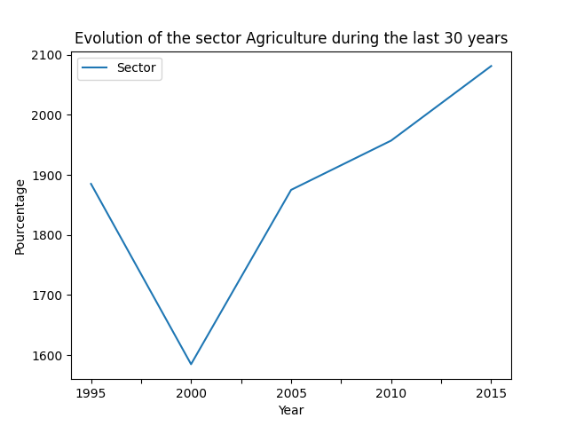
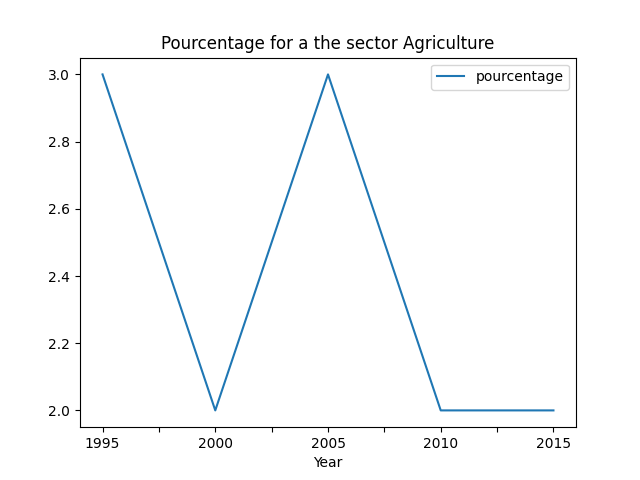

Evolution des secteurs

Un secteur économique, secteur d'activité ou secteur d'activité économique est un ensemble d’activité économique, ayant des traits similaires.
Evolution du pourcentage de des secteurs dans le monde
